Object Data Model
Outline
Graphical Notations for Conceptual Modeling
- Entity-Relationship (ER) diagrams (1976)

Graphical Notations for Conceptual Modeling
- Object Modelling Technique (OMT) diagrams (1991)
Graphical Notations for Conceptual Modeling
- (Simplified) Unified Modelling Language (UML) Object Class diagrams (1994)

Graphical Notations for Conceptual Modeling
- Object Role Modeling (ORM) diagrams
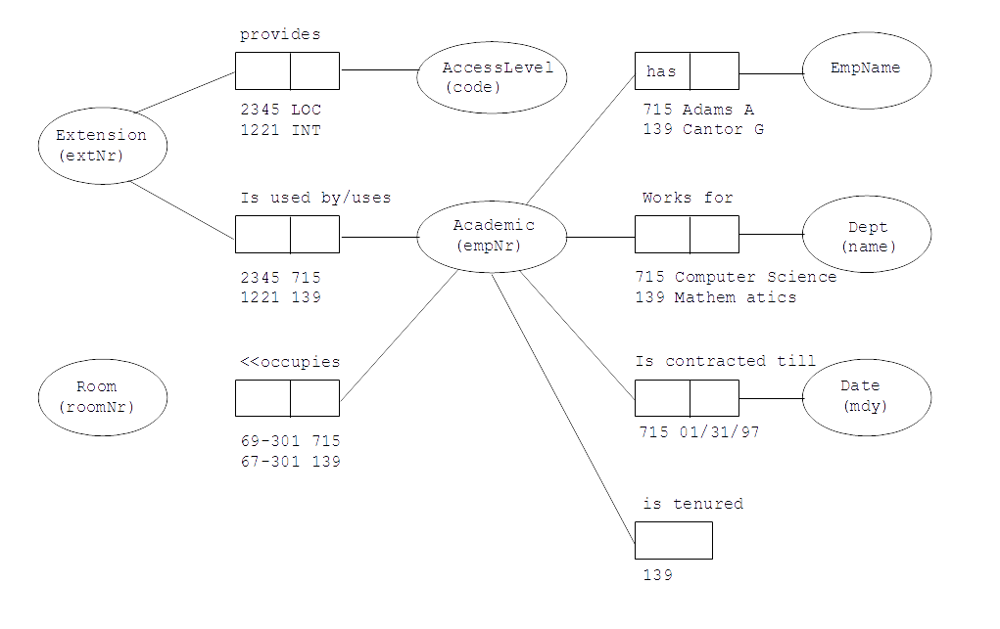
- ... and many, many, ... other graphical notations
Object Data Model
Outline
(Simplified) Class of Objects
- A database suppose to contain information about people

- A rectangular box with a header and a name of class (PERSON) inside a header represents a (simplified) class of objects
- A person is described by a social security number, name, date of birth and address

- The names of attributes are listed within a rectangular box one name of attribute per row
(Simplified) Class of Objects
- A person has from one to five email addreses and zero or more phone numbers

- Multiplicity of attribute like [1..5] (from one to five), zero or more ([*] or [0..*]), one or more ([1..*]), optional (zero or one, [0..1]), from "m" to "n" ([m..n]) follows a name of attribute
- Default multiplicity is "one" ([1])
(Simplified) Class of Objects
- A person is described by an optional country of origin and age (/ in front of attribute name age denotes a derived attribute)

(Simplified) Class of Objects
- A person is identified by a social security number and independently by a triple (name, date of birth, address)

- A tag IDx following a name of attribute denotes an identifier
- If the same tag (e.g. ID2) follows the names of several attributes then it means that an identifier consists of several attributes
- If an identifier consists of several attributes then it means, that each object in a class is identified by a tuple of values of the attributes
- An identifier which consists of several attributes is called as a composite identifer
(Simplified) Class of Objects
- A vehicle is described by a registration number, manufacturer, model, year when manufactured and optional fuel consumption
- Each vehicle has a different registration number

(Simplified) Class of Objects
- Summary
Object Data Model
Outline
Association
- A person owns a vehicle
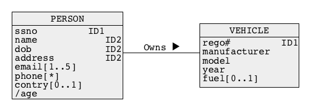
- A solid line that connects two classes represents an association
- A name above a line is an association name
- An association name if followed (preceeded or located above or below) by a small solid triangle, that represents a direction of interpretation of an association
Association
- A vehicle has an owner

- Locations of classes and associations in a diagram are immaterial
Association
- A person owns zero or more vehicles

- A vehicle has one owner

- Multiplicities of association are located at both ends of a line that represents an association
Association
- One-to-one association
- A department has a manager
- A department has exactly one manager
- A person who is a manager manages exactly one department
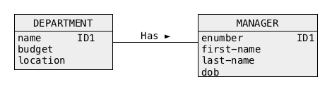

Association
- One-to-many association
- A company employs an employee
- A company employes many employees
- An employee works for none or one company
- It is possible that a company has no (zero) employees

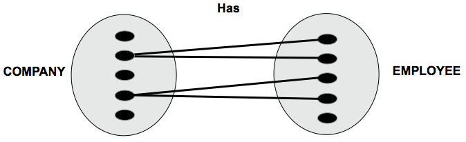
Association
- Many-to-many association
- A supplier supplies a part
- A supplier supplies zero or more parts
- A part is supplied by zero or more suppliers

Association
- Summary

Association
- More examples:
- A team consists of 22 players
- A player belongs to only one team
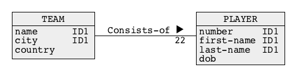
- A game is played by 11players plus maximum 3 substitutes
- A player participates in zero or more games
Object Data Model
Outline
Link Attribute
- A link attribute is an attribute that describes an association
- A student enrols a subject

- An enrolment is performed on a given day, it means, that an enrolment is described by an enrolment date
- A link attribute is graphically represented by a "class-like" rectangular box without a name of class in a header
Link Attribute
- Why an atribute enrolment-date must be a represented by a link attribute ?
- For example, what about an attribute enrolment-date describing a class STUDENT ?
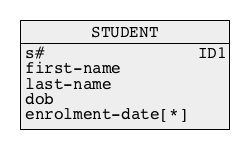
- Such design is incorrect because information about which subject has been enrolled by a student and on what date is missing
- A student is associated with a set of enrolment-dates, however ...
- ... there is no link between the values of an attribute enrolment-date and the objects in a class SUBJECT
Link Attribute
- So what about another option where an atribute enrolment-date describes a class SUBJECT ?
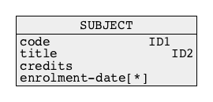
- Such design is also incorrect because information about who enrolled in a subject and on what date is missing again
- A subject is associated with a set of enrolment-dates, however ...
- ... there is no link between the values of an attribute enrolment-date and the objects in a class STUDENT
- Therefore, the only option for an attribute enrolment-date is to be a link attribute that describes an asociation between a class STUDENT and a class SUBJECT
Link Attribute
- If an attribute enrolment-date describes an association Enrols between the classes STUDENT and SUBJECT then its values are like labels attached to attached to the links between the objects from the classes STUDENT and SUBJECT
Link Attribute
- Another example of link attribute
- A supplier supplies a part
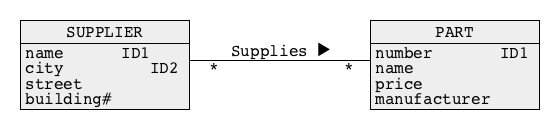
- A shipment of a part is performed on a given day, it means, that a shipment is described by an attribute shipment date
- A shipment contains a given number of parts and it means, that a shipment is also described by an attribute quantity

Object Data Model
Outline
Association Class
- An association class is a class that represents an association
- A student enrols in a subject
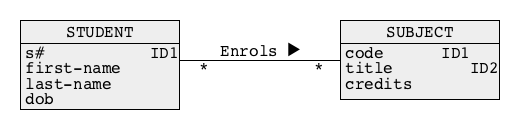
- An enrolment is performed on a given day, it means, that an enrolment is described by an attribute enrolment-date
- An association class ENROLMENT is graphically represented in the same way as a class of objects
Association Class
- What about an identifier of an association class ?
- An association class may have its own identifiers, for example enrolment-number in a class ENROLMENT
- An association class that represents many-to-many association has a default identifier that consists of identifiers of the classes from both sides of association, for example a pair (snumber, code) in a class ENROLMENT

- There is no need to include a default identifier into a description of a class of objects
Association Class
- Another example of association class
- A supplier supplies a part
- A shipment of a part is performed on a given day, it means, that a shipment is described by an attribute shipment-date
- A shipment contains a given number of parts, it means, that a shipment is also described by an attribute quantity
Association Class
- What can we use association classes for ?
- A shipment is delivered to a customer
- An association Delivered-to connects the classes SHIPMENT and CUSTOMER

- In a general case, it is possible to create associations between association classes and other classes of objects and between association classes and association classes
Object Data Model
Outline
Qualification
- A building at a university campus is described by a unique number, optional name and the total number of floors
- A room is described by a number and area
- A building consists of rooms

- What is an identifier of a class ROOM ?
- Identifier of a class ROOM is a composite identifier and it consists of the attributes bnumber from a class BUILDING and rnumber from a class ROOM
- How do we represent composite identifiers that consist of attributes from more than one class ?
- We use a qualification !
Qualification
- A building at a university campus is described by a unique number, optional name and the total number of floors. A room is described by a number and area. A building consists of rooms

- A qualification is represented by a rectangle with one or more attribute names
- In the example above a qualification means that in a given building there is at most one room with a given number
- It also means that an attribute rnumber is a local identifier in a class ROOM, i.e. all rooms in a given building have different numbers
- A pair of attributes (bnumber, rnumber) is a default identifier of a class ROOM
Qualification
- More examples:
- A bank account is located at a bank
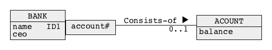
- A campus consists of buildings and buildings consist of rooms
- A company is listed at stock exchange
Qualification
- Sometimes qualification is needed for many-to-many associations
- For example, if we consider a pessimistic view of students who enrol in subjects then sometimes a student must enrol in the same subject more than one time (well, ... you know when it happens and why it is a "pessimistic" view of reality)
- Some time ago we created the following design

- But, ... if enrolment is repeated several times then a pair of attributes (snumber, code) is no longer an identifier of a class ENROLMENT !
Qualification
- If enrolment is repeated several times then an identifier of a class ENROLMENT is a triple (snumber, code, enrolment-date)
- How is this represented graphically ?
- It is represented by a qualification of the middle part of the association Enrols

- Qualification of the middle part of many-to-many association means, that an identifier of association class consists of an identifier of a class on the left hand side of association, identifier of a class on the right hand side of association, and qualification attribute(s)
Qualification
- A qualification of the middle part of many-to-many-association is equivalent to the following two single-side qualifications of one-to-many association and many-to-one association

Object Data Model
Outline
Generalization
- A generalization hierarchy represents Is-a-subset relation between the classes of objects
- A set of all undergraduate students is a subset of a set of students, it means, that an undergraduate student IS-A student
- A set of all postgraduate students is a subset of a set of students, it means, that a postgraduate student IS-A student
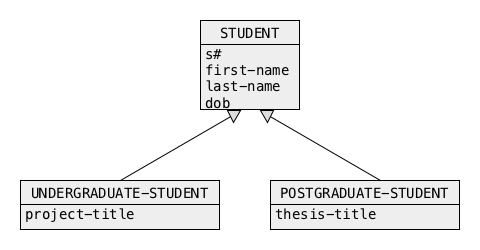
- A generalization hierarchy is built with arrows pointing from a subclass to a superclass
Generalization
- Another graphical notation for generalization hierarchy:
- A car IS-A vehicle and a truck IS-A vehicle

- To create a nice effect the arrows can be "joined" into a single arrow
Entity-Relationship Modeling
- Entity-Relationship Modeling is another graphical conceptual modeling notation
- It is presented in your texbook
- Graphically it is very similar to Object Data Model
- The following concepts from the notations are equivalent:
- Class of objects = Entity type
- Object = Entity instance
- Association = Relationship
- Identifier = Primary key or Candidate key
- Qualification = Weak entity type
References
- C. Coronel, S. Morris, A. Basta, M. Zgola, Data Management and Security, Chapters 2, 3, and 4 Cengage Compose eBook, 2018, eBook: Data Management and Security, 1st Edition
- T. Connoly, C. Begg, Database Systems, A Practical Approach to Design, Implementation, and Management, Chapter 12 Entity-Relationship Modeling, Chapter 13.1 Specialization/Generalization, Pearson Education Ltd, 2015